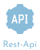

@if(isgerman.isgerman){
Meine Fähigkeiten
}@else {
My Skill
}


@if(isgerman.isgerman){
Ich lerne derzeit
Motiviert zu bleiben, um meine IT-Fähigkeiten zu erweitern, erfordert
einen strategischen Ansatz, eine neugierige Denkweise und ein Engagement
für lebenslanges Lernen.
} @else {
I am currently learning
Staying motivated to expand my IT skills requires a strategic approach,
a curious mindset, and a commitment to lifelong learning.
}